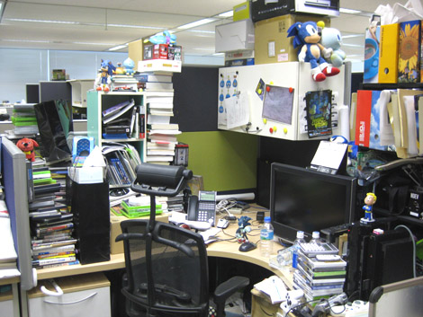
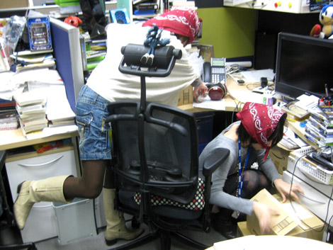
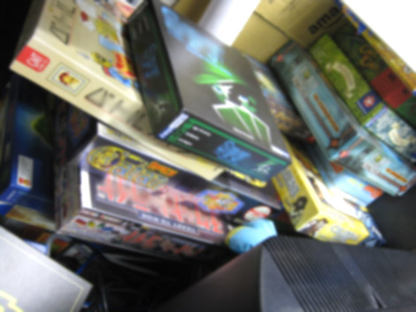
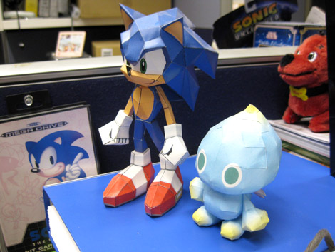

『橋本ディレクターのお席を紹介！(前編)』
2009年01月30日
こんにちは、マツバラです！
皆さま、遂にこの時がやって参りました！
こんにちは、ヨシノです。
お待たせいたしました。
募集企画第3弾！
『SWA』ディレクター・橋本さんのお席を
荒ら……リポートします！！
いやー、やっと潜入に成功しました。
ちなみに、「ん？何のこと？」という方は
こちらの記事をご覧下さい。
さて！ 橋本ディレクターは
この時より席をきれいにしたって言ってたよね？
うん。
「片付けたよ！」ってアピールしてた。
本当にきれいになってたら
ちょっと荒らしにくいかな～。
どれどれ、見に行きましょう！

…………
…………
マツバラ、良かったね。
心配ないみたいだよ。
う、うん……
それでは、気をとりなおして！
早速！
かかれ～っ！！

橋本さんのいない間に席を漁る2人
うわー、ヨシノ、見て！！
なになに？
この、
積まれたボードゲームの山！

そういえば、橋本さんが、『SWA』スタッフの人と
休憩時間にボードゲームで遊んでるとこ、
見たことある。
デジタルのゲームだけじゃなく
アナログゲームも好きなんだね！
「遊び」を研究してるのかなあ……
おっ、マツバラ。
これ、見て。
カワイイ♪
なになに？

かわいい～っ！
ペーパークラフトだね！
これ、欲しいなあ。
どうやって作ってあるんだろう？
DL販売してたんだよ。
今はもう終了してるらしいけど……
ちぇっ。
レアなお宝だね！
……しかし、色々どんどん出てくるけど
『SWA』に関係あるものは無いかな？
あ、そうだね。
よしっ！
次回は、『SWA』に関するものを探すことに、
決定～♪
日時: 2009年01月30日 17:00 | パーマリンク


 ソニックを愛する、元気な『SWA』2年目プランナー。
ソニックを愛する、元気な『SWA』2年目プランナー。 マイペースな『SWA』2年目プランナー。
マイペースな『SWA』2年目プランナー。
 ご意見・ご要望はこちら
ご意見・ご要望はこちら RSS
RSS